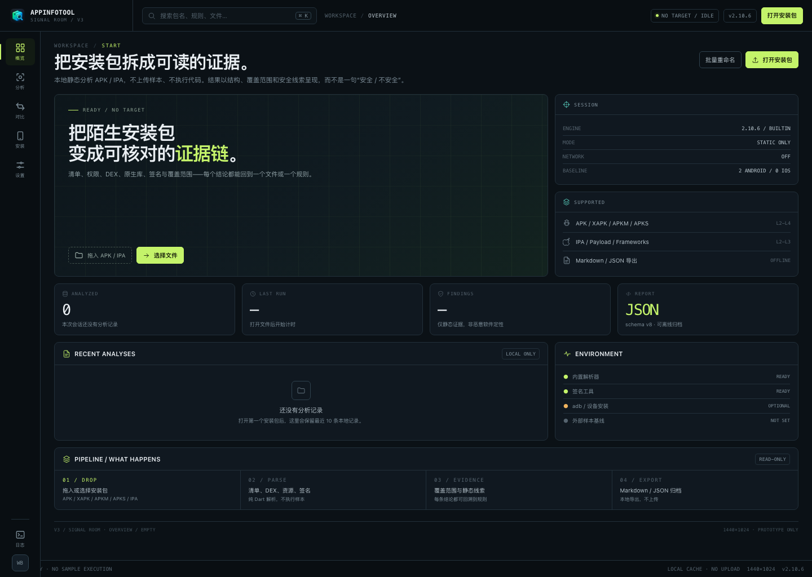
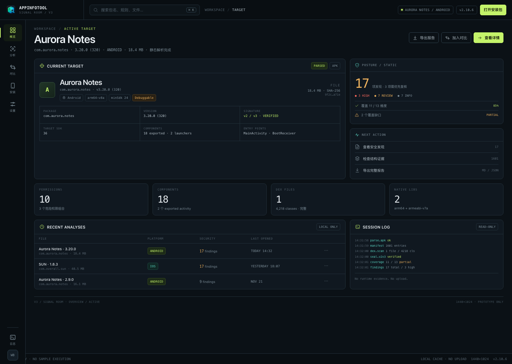
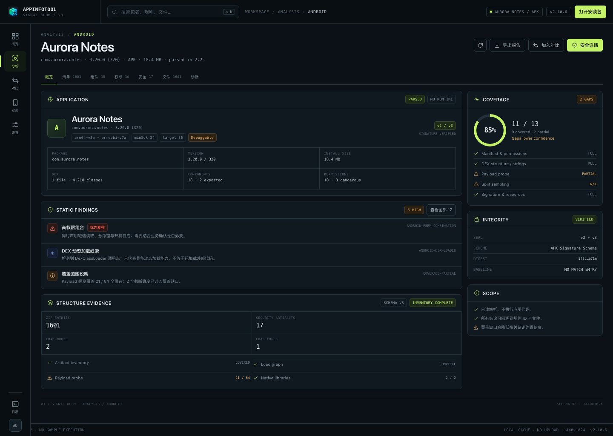
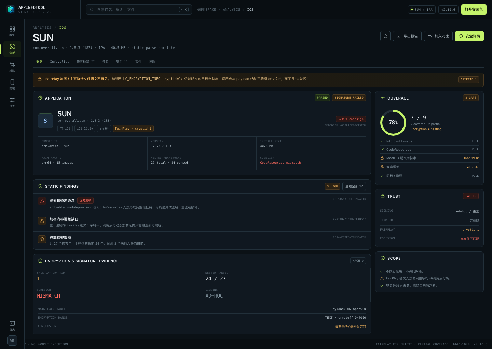
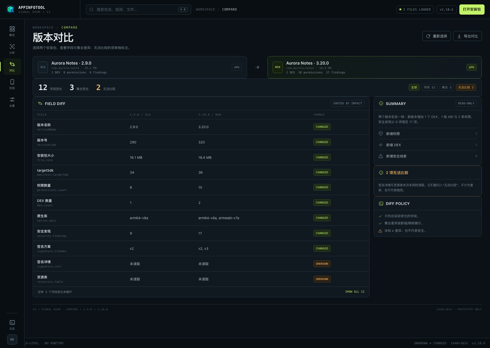
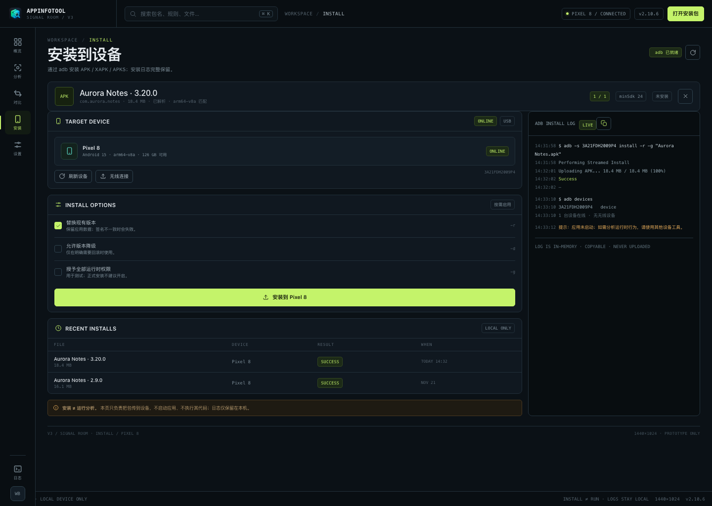
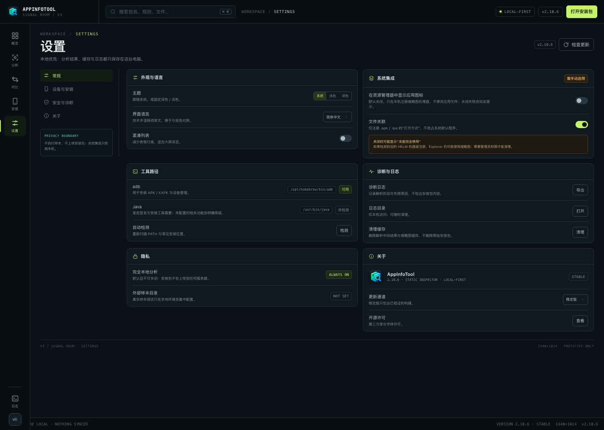
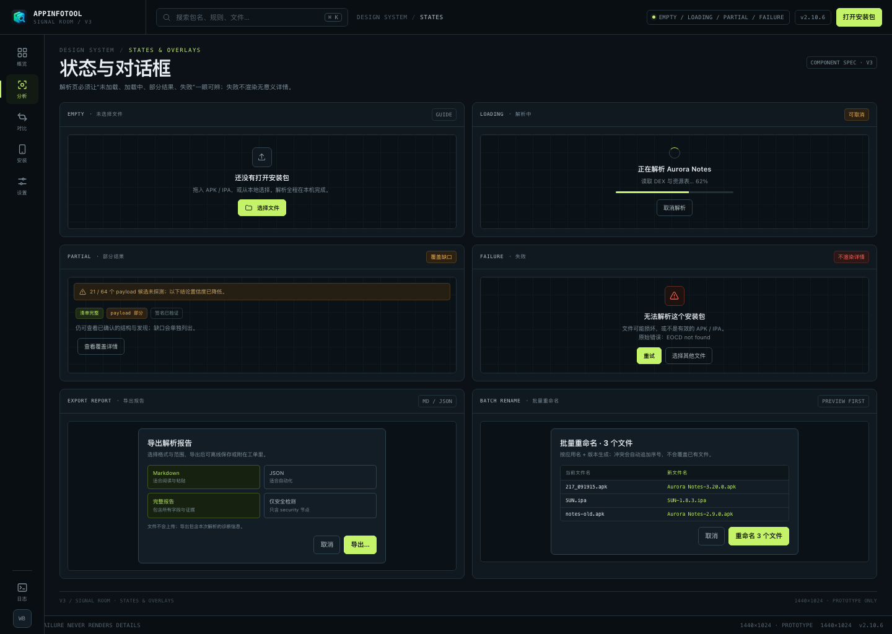

面向静态安装包检查的深色工作台。不是把信息堆满，而是让“当前对象、证据、覆盖缺口、下一步”在同一视线高度内成立。V3 与 V1 的暖白工作台是两种方向，便于对比选择。

从“没有目标”开始：支持格式、分析管线、环境状态。

目标身份、安全姿态、结构与最近记录集中在一屏。

证据优先：覆盖仪表、静态线索、Artifact / Load Graph。

FairPlay 密文、签名失败与嵌套截断在同一层级解释。

字段变化、集合变化、无法比较三类分开表达。

设备、选项、安装日志并排；安装与运行分析分离。

外观、系统集成、工具路径、诊断与隐私边界。

Empty / Loading / Partial / Failure，导出与批量重命名。